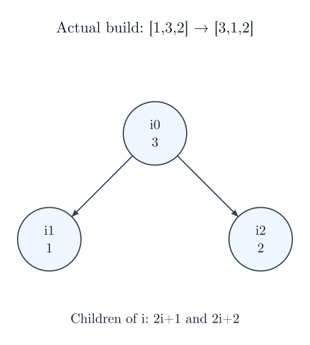
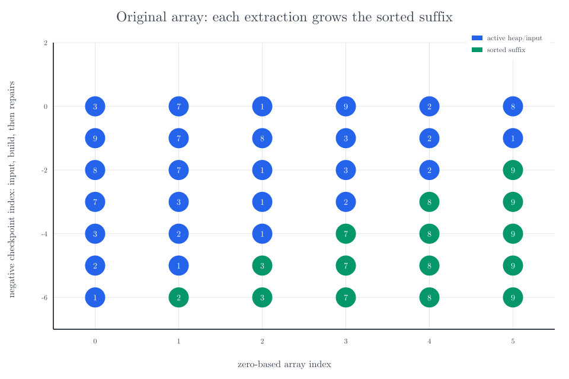
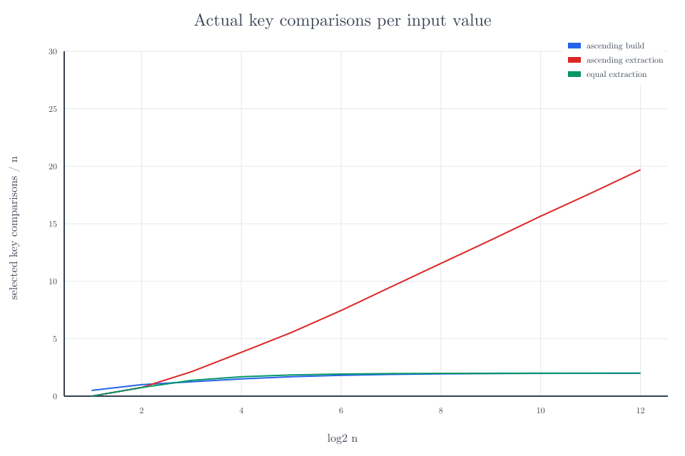
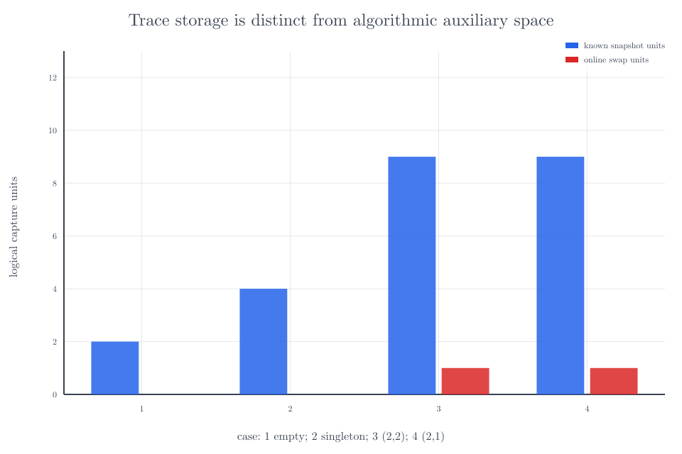

Heapsort: build a heap, grow a sorted suffix
Abstract
Rearrange an integer array into ascending order without allocating a second array for the in-place sorting algorithm. A binary max-heap makes the largest remaining value easy to select, but every extraction must repair the smaller active heap. This report follows actual build and extraction swaps, retains the original six-value example, and checks a linear bound on heap construction. It separates worst-case sort work from easy equal-value cases, and distinguishes the legacy constant-space sorter from owned run results and potentially quadratic full-state histories.
A three-value repair before the full example
For input 1,3,2, bottom-up construction repairs index 0. The left child 3 becomes the candidate; the right child 2 does not exceed it. One actual swap gives 3,1,2. There are two strict key comparisons and one build swap. The following program reads the completed build snapshot and the actual exchange records from a single shared heapsort execution.
#include <dm/dm.hpp>
int main() {
std::filesystem::create_directories("build");
const auto t = dm::algorithms::heapsort_trace({1, 3, 2});
const auto &heap = t.states.at(1).data;
std::print("| phase enum | heap size at swap | left | right | left before | right before | root parking " "|\n| ---: | ---: | ---: | ---: | ---: | ---: | --- |\n");
for (const auto &e : t.swaps)
std::print("| {} | {} | {} | {} | {} | {} | {} |\n", int(e.phase),
e.heap_size, e.left, e.right, e.left_before, e.right_before,
e.root_parking);
std::print("\nBuilt heap {} {} {}; actual build key comparisons {}; build sift swaps {}.\n",
heap[0], heap[1], heap[2], t.run.build.key_comparisons,
t.run.build.sift_swaps);
dm::graphics::Diagram d(90, 1000);
dm::graphics::DiagramNodeStyle style;
style.circle = true;
style.width = 1.2;
style.height = 1.2;
style.font_size = 23;
const std::vector<dm::graphics::DiagramPoint> positions{{2, 2}, {0, 0},
{4, 0}};
for (std::size_t i = 0; i < 3; ++i)
d.node(std::to_string(i), positions[i],
std::format("i{}\n{}", i, heap[i]), style);
d.edge("0", "1").edge("0", "2").text({2, 4},
"Actual build: [1,3,2] → [3,1,2]", 26).text({2, -1.5}, "Children of i: 2i+1 and 2i+2", 23).save_svg("build/heapsort_tiny.svg");
if (heap != std::vector<std::int64_t>{3, 1, 2} ||
t.run.build.key_comparisons != 2)
throw std::runtime_error("tiny repair");
}| phase enum | heap size at swap | left | right | left before | right before | root parking |
|---|---|---|---|---|---|---|
| 1 | 3 | 0 | 1 | 1 | 3 | false |
| 2 | 3 | 0 | 2 | 3 | 2 | true |
| 2 | 2 | 0 | 1 | 2 | 1 | true |
Built heap 3 1 2; actual build key comparisons 2; build sift swaps 1.

Why the implicit tree can be repaired
Number the complete binary tree by array indices starting at zero. Children of i are 2i+1 and 2i+2 when present; the parent of a nonroot node is ⌊(i−1)/2⌋. Internal nodes have i<n/2, so child arithmetic is performed only after that safe bound check. The max-heap property is
Sift-down assumes both child subtrees are already heaps. It compares the parent candidate with the left child, then with the right child if present. If the candidate remains the parent it stops; otherwise it swaps with the strict larger candidate and descends. A tie never replaces the current candidate. Swapping restores the relation above the next visited node, and only the moved value may still violate its new children. A downward path is finite and has at most the subtree's height in exchanges, proving termination and repair correctness.
Bottom-up construction visits internal roots from n/2−1 down to 0. Their child subtrees have already been repaired. Induction gives a heap at completion, without assuming the whole input was initially a heap.
The original six values: heap prefix and sorted suffix
The original array is 3,7,1,9,2,8. Actual build repairs indices 2,1,0 and produces 9,7,8,3,2,1. Each extraction parks the heap root at its last active position, reduces the heap size, then repairs the remaining prefix. The table and figure below contain the input, completed build and every completed extraction from one execution. Blue denotes the active prefix and green the sorted suffix; numbers remain actual integer values.
#include <dm/dm.hpp>
int main() {
std::filesystem::create_directories("build");
const std::vector<std::int64_t> input{3, 7, 1, 9, 2, 8};
const auto t = dm::algorithms::heapsort_trace(input);
std::vector<double> hx, hy, sx, sy;
std::print("| checkpoint | phase enum | heap size | full actual array | swaps so far |\n| ---: | ---: | " "---: | --- | ---: |\n");
for (std::size_t j = 0; j < t.states.size(); ++j) {
const auto &s = t.states[j];
std::print("| {} | {} | {} |", j, int(s.phase), s.heap_size);
for (auto x : s.data)
std::print(" {}", x);
std::print(" | {} |\n", s.swaps_done);
for (std::size_t i = 0; i < s.data.size(); ++i) {
auto &x = i < s.heap_size ? hx : sx;
auto &y = i < s.heap_size ? hy : sy;
x.push_back(i);
y.push_back(-double(j));
}
}
std::print("\nFinal sorted output:");
for (auto x : t.run.data)
std::print(" {}", x);
std::print(". Build comparisons {}; extraction comparisons {}; root parking swaps {}.\n",
t.run.build.key_comparisons, t.run.extraction.key_comparisons,
t.run.extraction.root_swaps);
auto plot = dm::graphics::RPlot::create();
plot.points(hx, hy, "active heap/input", {37, 99, 235}, 17.).points(
sx, sy, "sorted suffix", {5, 150, 105}, 17.);
for (std::size_t j = 0; j < t.states.size(); ++j)
for (std::size_t i = 0; i < 6; ++i)
plot.text(i, -double(j), std::to_string(t.states[j].data[i]),
{255, 255, 255}, 14.);
plot.title("Original array: each extraction grows the sorted suffix").x_label("zero-based array index").y_label("negative checkpoint index: input, build, then repairs").x_limits(-.5, 5.5).y_limits(-7, 2).save_svg("build/heapsort_original.svg");
auto expected = input;
std::sort(expected.begin(), expected.end());
if (t.run.data != expected ||
t.states[1].data != std::vector<std::int64_t>{9, 7, 8, 3, 2, 1})
throw std::runtime_error("original output");
}| checkpoint | phase enum | heap size | full actual array | swaps so far |
|---|---|---|---|---|
| 0 | 0 | 6 | 3 7 1 9 2 8 | 0 |
| 1 | 1 | 6 | 9 7 8 3 2 1 | 4 |
| 2 | 2 | 5 | 8 7 1 3 2 9 | 6 |
| 3 | 2 | 4 | 7 3 1 2 8 9 | 9 |
| 4 | 2 | 3 | 3 2 1 7 8 9 | 11 |
| 5 | 2 | 2 | 2 1 3 7 8 9 | 13 |
| 6 | 2 | 1 | 1 2 3 7 8 9 | 14 |
Final sorted output: 1 2 3 7 8 9. Build comparisons 7; extraction comparisons 8; root parking swaps 5.

The sorting invariant is: the prefix is a max-heap, the suffix is ascending, and every suffix value is at least every prefix value. Root parking extends that suffix by its smallest new member; repair preserves the remaining multiset and heap condition. After n−1 extractions only one prefix value remains, so the full array is ascending. No key arithmetic is used, permitting the entire int64 range.
Prove and check linear construction
At least h levels can lie below exactly ⌊n/2^h⌋ nodes in a complete binary heap. Counting each node once per level of its height gives the exact height sum
A sift from height h applies at most h downward swaps and at most 2h key comparisons. Therefore build sift swaps are at most H(n) and build comparisons at most 2H(n). There are n/2 sift calls; terminal leaf checks do not compare keys. This avoids the old ceiling-series argument, which discarded rounding terms without justification.
For sorting, each of n−1 reduced-prefix repairs traverses at most ⌊log2 n⌋ levels, giving an O(n log n) worst-case upper bound. This is not a claim that every input takes Θ(n log n). The equal-valued family stops every sift immediately and needs only linear selected comparisons, though root parking still swaps n−1 times.
#include <dm/dm.hpp>
int main() {
std::filesystem::create_directories("build");
std::vector<double> x, build, extract, equal;
std::print("| n | ascending build comparisons | 2H(n) | ascending extraction comparisons | equal " "extraction comparisons |\n| ---: | ---: | ---: | ---: | ---: |\n");
for (unsigned power = 1; power <= 12; ++power) {
const std::size_t n = std::size_t{1} << power;
std::vector<std::int64_t> ascending(n);
for (std::size_t i = 0; i < n; ++i)
ascending[i] = i;
const auto a = dm::algorithms::heapsort_run(ascending);
const auto e =
dm::algorithms::heapsort_run(std::vector<std::int64_t>(n, 7));
const auto bound = 2 * (n - std::popcount(n));
std::print("| {} | {} | {} | {} | {} |\n", n, a.build.key_comparisons,
bound, a.extraction.key_comparisons,
e.extraction.key_comparisons);
if (a.build.key_comparisons > bound || e.extraction.sift_swaps != 0 ||
!std::is_sorted(a.data.begin(), a.data.end()))
throw std::runtime_error("work bound");
x.push_back(power);
build.push_back(double(a.build.key_comparisons) / n);
extract.push_back(double(a.extraction.key_comparisons) / n);
equal.push_back(double(e.extraction.key_comparisons) / n);
}
auto plot = dm::graphics::RPlot::create();
plot.line(x, build, "ascending build", {37, 99, 235}, 2.).line(
x, extract, "ascending extraction", {220, 38, 38}, 2.).line(
x, equal, "equal extraction", {5, 150, 105}, 2.).title(
"Actual key comparisons per input value").x_label("log2 n").y_label(
"selected key comparisons / n").y_limits(0, 30).save_svg(
"build/heapsort_work.svg");
}| n | ascending build comparisons | 2H(n) | ascending extraction comparisons | equal extraction comparisons |
|---|---|---|---|---|
| 2 | 1 | 2 | 0 | 0 |
| 4 | 4 | 6 | 3 | 3 |
| 8 | 10 | 14 | 17 | 11 |
| 16 | 24 | 30 | 61 | 27 |
| 32 | 54 | 62 | 177 | 59 |
| 64 | 116 | 126 | 477 | 123 |
| 128 | 242 | 254 | 1217 | 251 |
| 256 | 496 | 510 | 2956 | 507 |
| 512 | 1006 | 1022 | 6952 | 1019 |
| 1024 | 2028 | 2046 | 16032 | 2043 |
| 2048 | 4074 | 4094 | 36130 | 4091 |
| 4096 | 8168 | 8190 | 80667 | 8187 |

Constant algorithmic space versus owned histories
The in-place build_max_heap and heapsort entry points allocate nothing, use
iterative repairs and constant auxiliary state. The owned heapsort_run first
copies input, adding O(n) working/output storage. The full trace goes further:
it always stores input and completed-build states, even for empty or singleton
inputs, and then n−1 post-repair states for n≥1. If m=2+max(n−1,0), known
snapshot capture is m(n+1) logical units: one record plus n integer values per
state. Each actual swap adds one further unit online.
The default input cap and logical capture cap are each one million, zero disabling that policy. Known snapshot requirements are checked before working allocation/copy. Complete snapshot space is reserved in the logical budget, while each unknown swap record is admitted before that exchange. Fields, ordinary output, vector capacities and allocation overhead are excluded: these limits are not byte or peak-RAM bounds. Failure returns no partial history and leaves the caller's input unchanged. Full-state storage is O(n²), plus O(n log n) swap records, so the traced variant does not inherit the in-place sorter's constant-space claim.
#include <dm/dm.hpp>
int main() {
std::filesystem::create_directories("build");
const std::vector<std::vector<std::int64_t>> inputs{{}, {7}, {2, 2}, {2, 1}};
std::vector<double> x, snapshots, events;
std::print("| case | n | snapshots | actual swap events | logical capture units |\n| ---: | ---: | ---: " "| ---: | ---: |\n");
for (std::size_t i = 0; i < inputs.size(); ++i) {
const auto t = dm::algorithms::heapsort_trace(inputs[i]);
std::print("| {} | {} | {} | {} | {} |\n", i + 1, inputs[i].size(),
t.states.size(), t.swaps.size(), t.captured_entries);
x.push_back(i + 1);
snapshots.push_back(t.states.size() * (inputs[i].size() + 1));
events.push_back(t.swaps.size());
}
const auto tied = dm::algorithms::heapsort_trace({2, 2});
const auto &e = tied.swaps.at(0);
std::print("\nEqual-valued actual exchange: indices {},{}; before-values {},{}; root parking {}.\n",
e.left, e.right, e.left_before, e.right_before, e.root_parking);
bool known = false, online = false, inputcap = false;
try {
(void) dm::algorithms::heapsort_trace({2, 1}, {2, 8});
} catch (const std::length_error &) {
known = true;
}
try {
(void) dm::algorithms::heapsort_trace({2, 1}, {2, 9});
} catch (const std::length_error &) {
online = true;
}
try {
(void) dm::algorithms::heapsort_trace({2, 1}, {1, 100});
} catch (const std::length_error &) {
inputcap = true;
}
const auto exact = dm::algorithms::heapsort_trace({2, 1}, {2, 10});
std::print("Known snapshot cap8 rejects {}; reserved9 plus first online event rejects {}; input cap1 " "rejects {}; exact10 retains {} units.\n",
known, online, inputcap, exact.captured_entries);
if (!known || !online || !inputcap || e.left_before != e.right_before)
throw std::runtime_error("capture controls");
auto plot = dm::graphics::RPlot::create();
auto left = x, right = x;
for (auto &v : left)
v -= .18;
for (auto &v : right)
v += .18;
plot.bars(left, snapshots, "known snapshot units", {37, 99, 235}, .32).bars(
right, events, "online swap units", {220, 38, 38}, .32).title(
"Trace storage is distinct from algorithmic auxiliary space").x_label(
"case: 1 empty; 2 singleton; 3 (2,2); 4 (2,1)").y_label(
"logical capture units").y_limits(0, 13).save_svg(
"build/heapsort_controls.svg");
}| case | n | snapshots | actual swap events | logical capture units |
|---|---|---|---|---|
| 1 | 0 | 2 | 0 | 2 |
| 2 | 1 | 2 | 0 | 4 |
| 3 | 2 | 3 | 1 | 10 |
| 4 | 2 | 3 | 1 | 10 |
Equal-valued actual exchange: indices 0,1; before-values 2,2; root parking true. Known snapshot cap8 rejects true; reserved9 plus first online event rejects true; input cap1 rejects true; exact10 retains 10 units.

Equal keys need care when discussing stability. The integer API has no identity labels, but the two-value trace above records an actual exchange of positions 0 and 1 when both contain 2. If those equal keys carried original labels a,b, that exchange would reverse their order. This provides a concrete instability witness; strict candidate comparisons do not make the whole sorting algorithm stable.
Owned output, snapshots and event scalars retain no input references and copy independently. Legacy in-place calls intentionally mutate their vector; owned run/trace calls never do. Independent calls share no mutable state. Input caps are ignored by the legacy methods, and capture caps are ignored without tracing. Numerical timing, cache superiority and universal comparisons with quicksort or mergesort are outside this evidence.
What the examples establish
The original six values show the two invariants that drive heapsort: heap dominance exposes the next maximum, and every root parking extends a sorted suffix. The exact height sum proves linear construction, while actual comparison curves distinguish a worst-case upper bound from easy inputs. Constant auxiliary storage belongs to the in-place algorithm; retaining full histories has an explicit, much larger cost. No external dataset is needed to test this finite ordering problem.
Primary sources are J. W. J. Williams (1964), [Algorithm 232: Heapsort](https://doi.org/10.1145/512274.512284), and R. W. Floyd (1964), [Algorithm 245: Treesort 3](https://doi.org/10.1145/355588.365103). The library uses bottom-up construction followed by its original strict left-before-right swap-based repairs; it does not claim to reproduce every historical procedure or comparison count.
Verification compares legacy built heaps and sorted outputs with a frozen implementation, checks every ternary input through eight positions against independent heap/sorted-suffix/multiset certificates, and checks actual swap-prefix states and selected work under sanitizers. Extremes, ownership, equal swaps, disabled/exact/one-short known and online capture caps accompany the generated families. API examples, complete programs, inspected figures and both exports are verified before retiring the original report.